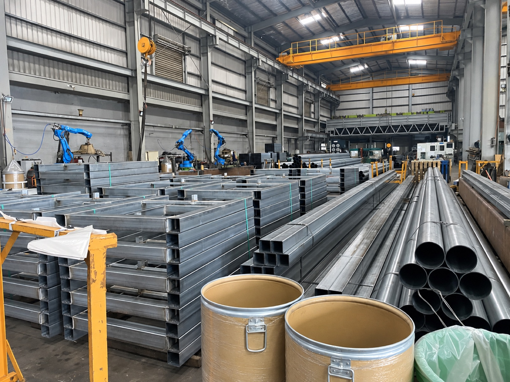
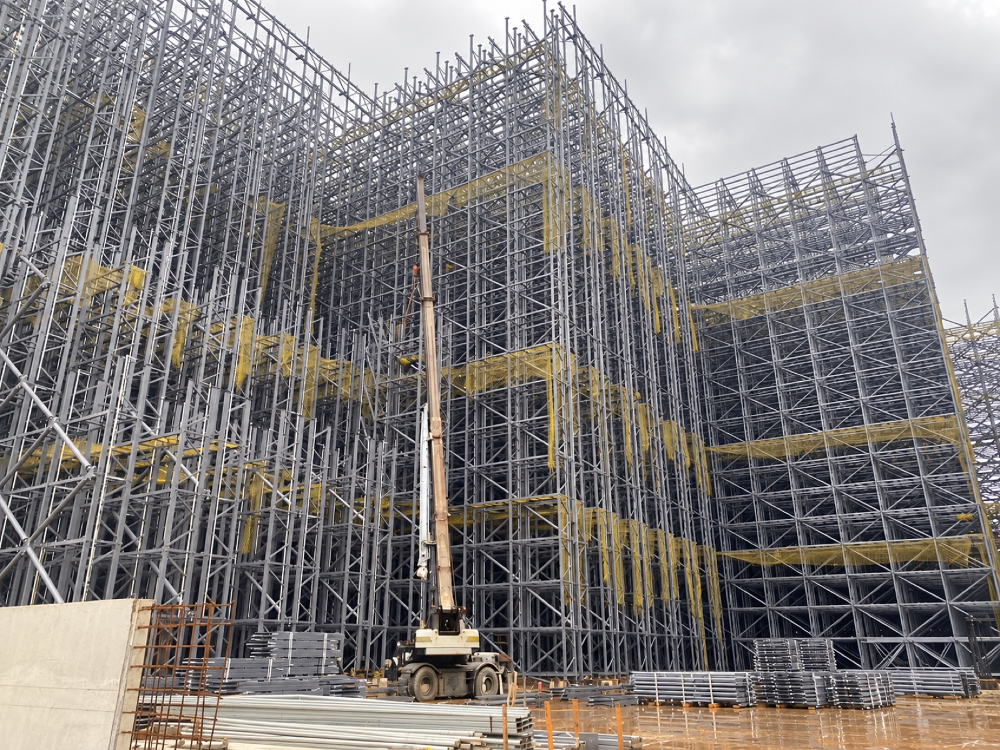
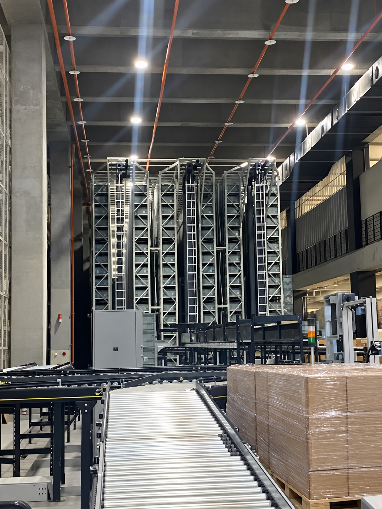
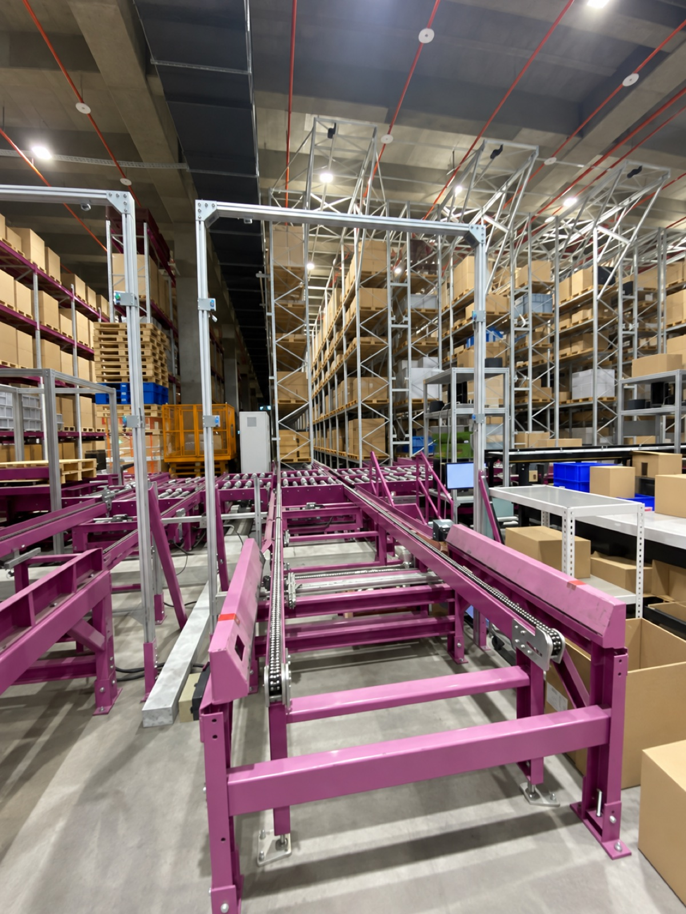
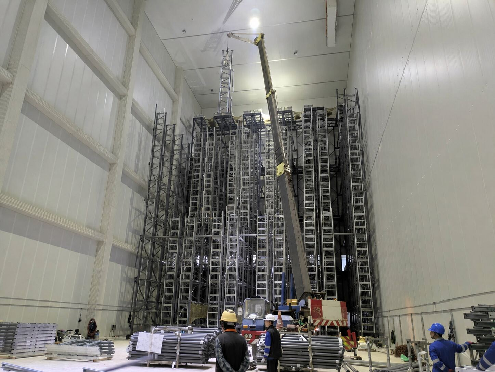
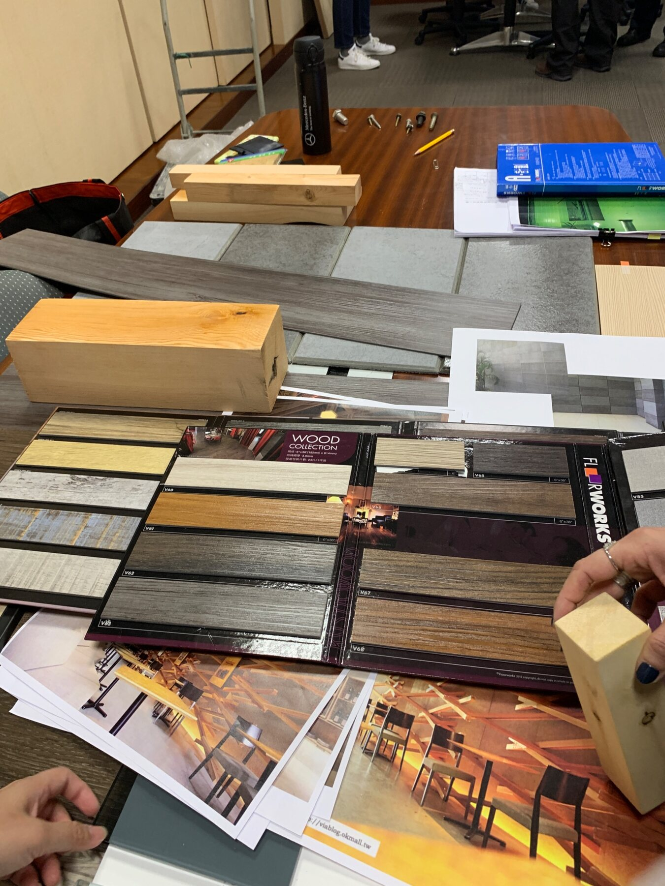
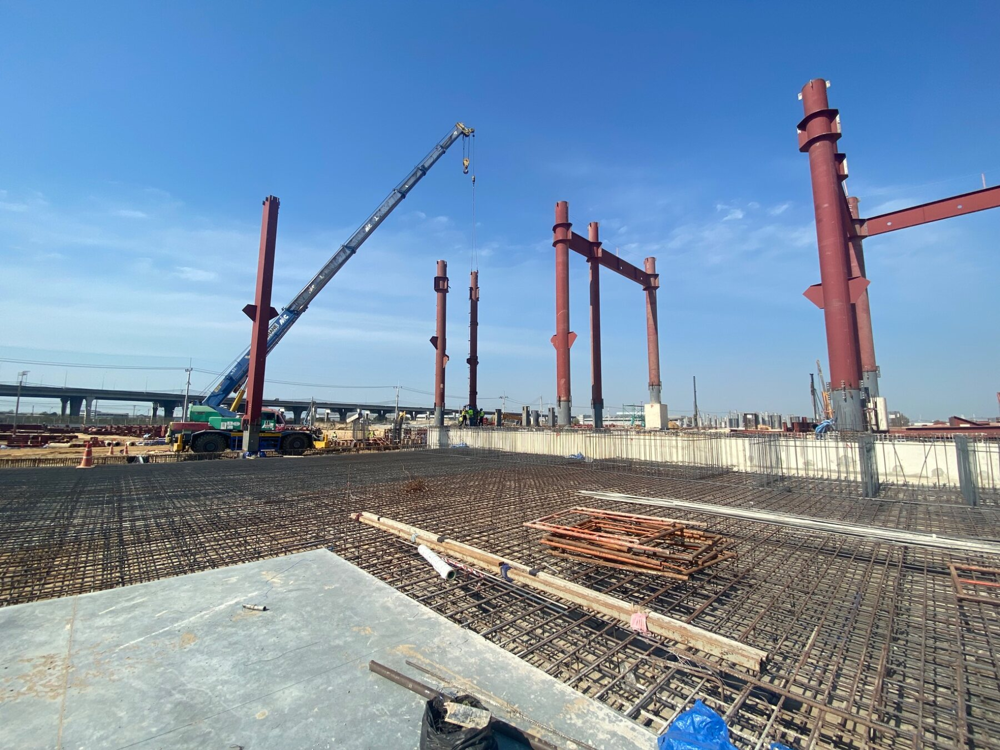
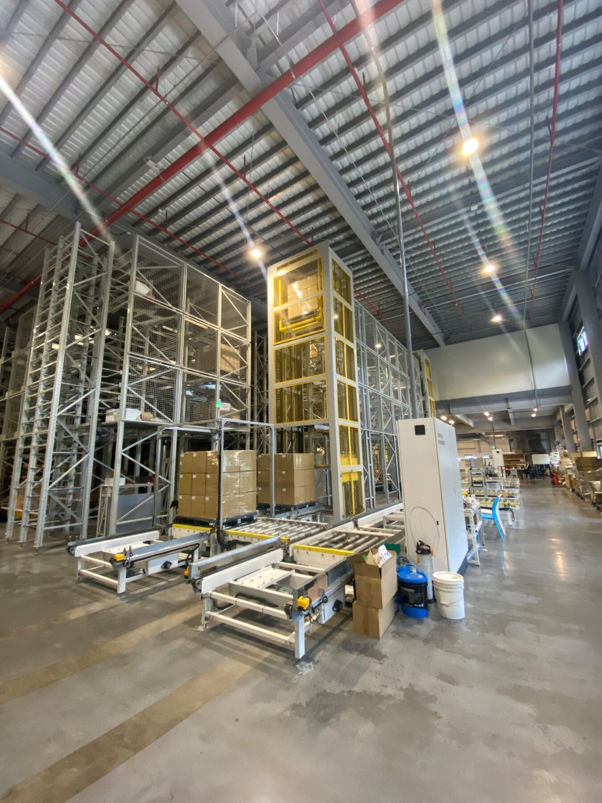
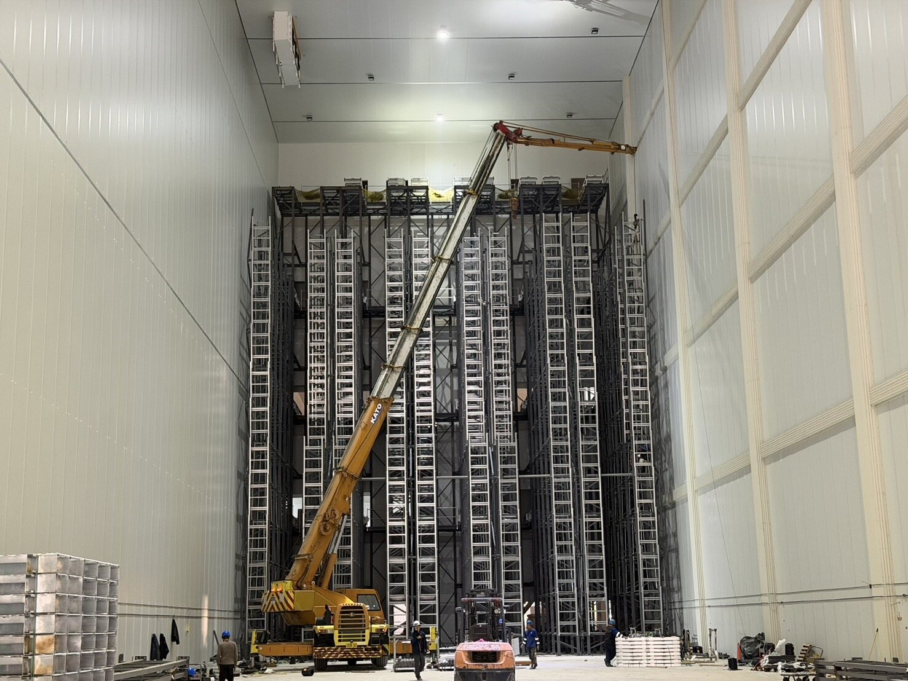
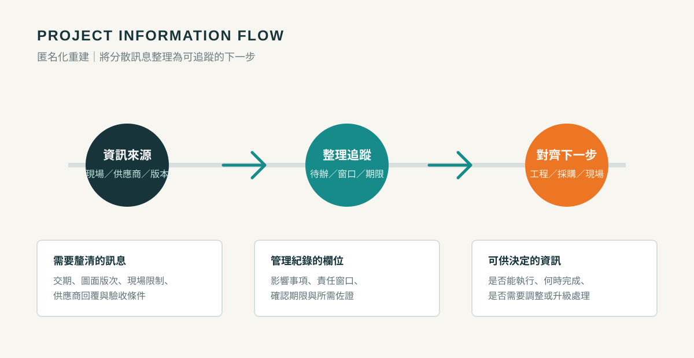

ROLE EVIDENCE MAP
策略、供應商、流程與專案，
都有對應的工作輸出。
以可公開的判斷依據與管理紀錄呈現工作方式：先對齊需求與資料口徑，再把成本、技術、供應風險與交付條件納入決策。
01 · EVIDENCE WORKSPACE
同一個採購案，
用三種視角做判斷。
切換查看任務狀態、RFQ比較與決策脈絡。這不是軟體功能展示，而是將實際工作方法去識別化後重新呈現。
替代來源導入｜任務狀態
需求確認 2
確認圖面版本與必要製程
AC採購待工程確認
釐清包裝、運輸與驗收責任
PMPM範圍檢核
RFQ / 尋源 2
候選供應商初篩與能力問卷
AC採購5 → 3
統一數量、交期與報價假設
AC採購報價比較中
技術評估 2
供應商B：產能資料待補
EN工程高風險
樣品與品質文件共同檢視
QA品質檢核中
商務協商 1
付款、MOQ與交期承諾校準
AC採購條件確認中
選擇 / 交付 1
主來源A；B改善後列第二來源
PM團隊GATE 04
切換決策情境觀察權重改變時，推薦結果如何調整
fx
=SUMPRODUCT(WEIGHT,SUPPLIER_SCORE)技術25% · 成本25% · 產能20% · 品質15% · 商務10% · 風險5%| 評估構面 | 權重 | 供應商A | 供應商B | 供應商C | 判斷紀錄 | |
|---|---|---|---|---|---|---|
| 1 | 技術與規格 | 25% | 23 | 24 | 20 | B技術佳，產能待補 |
| 2 | 總評估成本 | 25% | 20 | 22 | 24 | C價格低，交期風險高 |
| 3 | 產能與交期 | 20% | 18 | 15 | 12 | A交付條件最完整 |
| 4 | 品質與文件 | 15% | 14 | 13 | 11 | A文件與異常回覆較完整 |
| 5 | 商務條件 | 10% | 8 | 8 | 9 | 付款與MOQ仍需協商 |
| 6 | 供應風險 | 5% | 4 | 3 | 2 | C有關鍵材料依賴 |
| 7 | 加權總分 | 100% | 87 | 85 | 78 | 主來源A／替代來源B |
RFQ_COMPAREQUOTE_NORMALIZESUPPLIER_RISKDECISION_LOG
Sourcing Decision
COST × CAPABILITY × RISK × DELIVERY
可比較可承諾可追蹤
需求基準
圖面／規格／數量／範圍／驗收
OUTPUT · RFQ BASELINE供應能力
製程／品質／產能／實績／技術回覆
OUTPUT · CAPABILITY VIEW總評估成本
單價／MOQ／物流／付款／變更成本
OUTPUT · COST MODEL供應風險
單一來源／材料／交期／替代方案
OUTPUT · RISK RESPONSE專案承諾
里程碑／Owner／異常／驗收條件
OUTPUT · DELIVERY GATE需求澄清資料校準供應評估決策定點交付追蹤
02 · MANUFACTURING PROCESS CAPABILITY
看得到設備，
不等於做得出穩定製程。
供應商訪查不只確認「有沒有機器」，而是把製程適配、有效產能、品質控制、外包依賴與交付韌性轉成可查驗的採購證據。

評估構面現場／文件要看什麼如何影響採購判斷
製程路徑備料、加工、組裝、表面處理、檢驗及包裝是否連貫；哪些工序外包。辨識技術可行性、責任界面與外包造成的交期／品質風險。
瓶頸與產能關鍵設備數量、人力配置、換線／切換時間、在製品與既有訂單負荷。把「月產能」還原為可承諾的有效產能，必要時設定備援來源。
品質與追溯圖面版本、首件確認、量測／檢驗點、不合格隔離、紀錄及矯正措施。決定可否直接導入、先試作驗證，或須完成改善後才列入合格來源。
交付與改善材料前置期、製作排程、包裝運輸、現場安裝介面及異常回覆機制。將供應承諾連到專案里程碑、Owner、期限與下一個決策點。



呈現界線：本框架依工程設備、金屬製作與供應商現場訪查經驗匿名化重建，用於說明採購如何評估製程能力；不宣稱半導體製程認證、品質稽核資格或特定客戶導入成果。四張照片均已移除人物、品牌、標籤、螢幕內容與可識別場域資訊。
03 · COST IMPROVEMENT EVIDENCE
400萬元不是一句成果，
而是一條決策路徑。
VERIFIED RESULTNT$ 4M+單一專案可公開成果
重建範圍基準
拆分材料、製作、運輸、施工與驗收責任。
校準報價假設
統一規格、數量、工序、交期與付款條件。
比較替代方案
在品質與交付不降低下重排分工與界面。
議價並鎖定責任
把價差、風險與履約責任寫入決策紀錄。
成本改善槓桿｜相對影響指數
範圍澄清
高
報價校準
高
替代方案
中高
商務協商
中
僅呈現相對影響，不揭露專案總價或供應商報價。
04 · SOURCING × PROJECT DELIVERY
採購決定之後，
仍要一路追到交付。
供應商進度與專案里程碑使用同一套節點管理；差異出現時，可以看到影響、Owner與下一決策點。
SUPPLY PROJECT GANTT8-WEEK VIEW
W1W2W3W4W5W6W7W8需求／圖面凍結RFQ／供應商評估商務協商／定點備料／製作到貨／驗收
05 · PROCUREMENT DATA CONTROL
把合約、驗收與付款資料，
放回同一套檢核邏輯。
大型工程與設備專案中，採購資料不只用於下單。透過 ERP、合約、估驗、驗收與請款資料交叉核對，讓範圍、金額、完成度與付款條件有一致依據。
RECORD FLOWANONYMIZED RECONSTRUCTION
01
彙整採購與合約條件
確認範圍、交付、付款、保固與變更條件；將容易有落差的項目標示為後續檢核點。
02
對照實際完成與驗收證明
以圖面版本、現場完成度、驗收紀錄及附件確認工程或設備項目是否符合請款依據。
03
追蹤差異、責任與下一步
將缺件、變更、金額或時程差異整理為窗口、處理期限與後續付款或交付影響。
CHECKPOINT VIEWERP · CONTRACT · ACCEPTANCE
檢核項目比對資料處理狀態
範圍與版本圖面／報價／合約確認一致
完成與驗收現場／驗收紀錄／附件待補文件
計價與付款估驗／請款／付款節點依條件檢核
變更與風險變更單／責任窗口／期限追蹤處理中
06 · FIELD EVIDENCE
照片不是裝飾，
而是採購判斷的現場脈絡。
點擊照片可查看它對規格、供應範圍、進度與驗收的意義；所有可識別資訊均已移除。







07 · COMMUNICATION EVIDENCE
讓外部回覆，
變成內部可執行條件。
以工作輸出呈現供應商溝通：確認規格、交期、產能與商務條件，再轉成內部責任與下一步。
RFQ CLARIFICATION · EMAILWORKING ENGLISH
Subject: RFQ Baseline and Supplier Readiness Confirmation
Please confirm the following items based on the latest drawing:
• material specification and included processes
• production lead time and available capacity
• packaging, delivery and payment terms
• known supply risks and available alternatives
Please identify any exclusions or assumptions in the quotation.
INTERNAL HANDOFFDECISION RECORD
08 · DATA COLLABORATION EVIDENCE
把分散資訊，整理成
下一步可用的資料。
曾參與把現場走訪、供應商回覆、圖面版次與交期訊息，收斂成可追蹤的待辦、責任窗口與確認期限。

ISSUE / ACTION RECORD匿名化工作紀錄重建
現場訊號材料到貨批次與作業面不同步
確認依據供應商回覆、到貨排程、現場可施工時段
分批到貨確認進場窗口
版本差異圖面與報價排除項目待釐清
確認依據圖面版次、報價條件、合約範圍與會議結論
指定窗口設定回覆期限
交付前置驗收附件尚未備齊
確認依據驗收條件、現場完成度、附件與請款節點
補齊佐證再進入驗收
每筆訊息均保留：影響事項、確認依據、責任窗口、期限與下一步，避免資訊只停留在口頭追蹤。